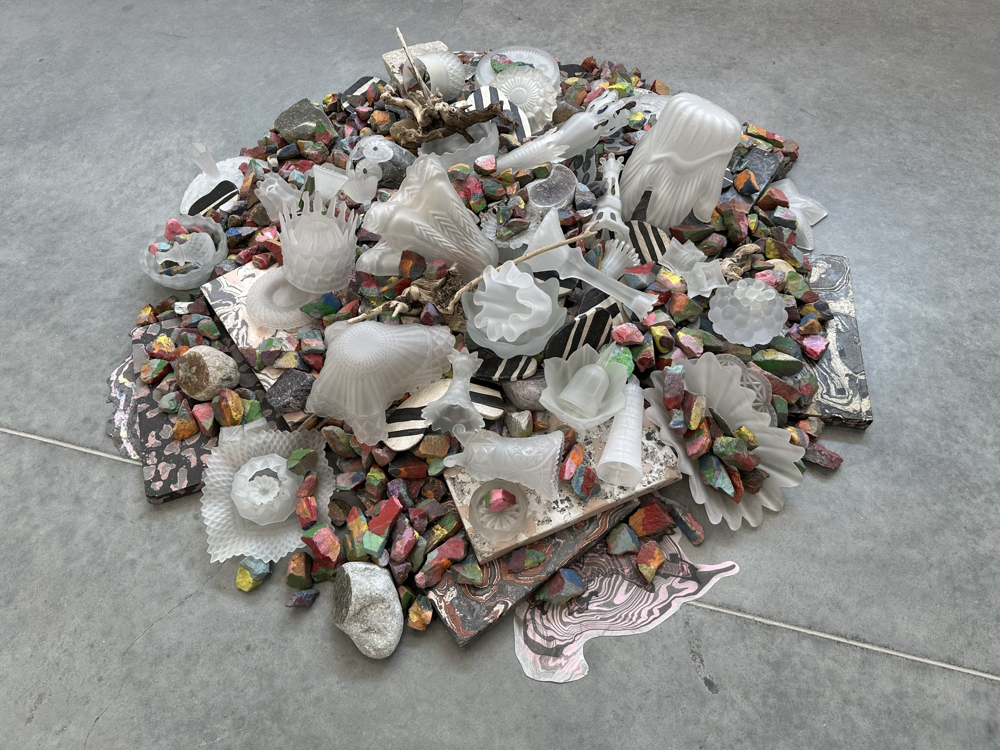

Sculpture
All Washed Up
Floor piece from Same Rain, Same Stars, a collaborative installation with Judd Schiffman and Athena Witscher at Overlap, June 19 – July 27, 2024.
My contributions to the installation: wall paintings, this floor piece, shelves, and scagliola pieces shown on the shelves.
